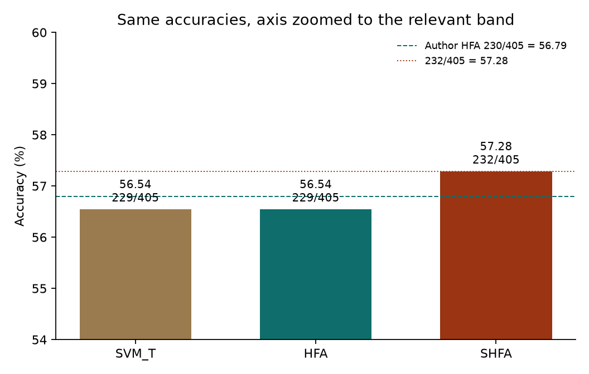
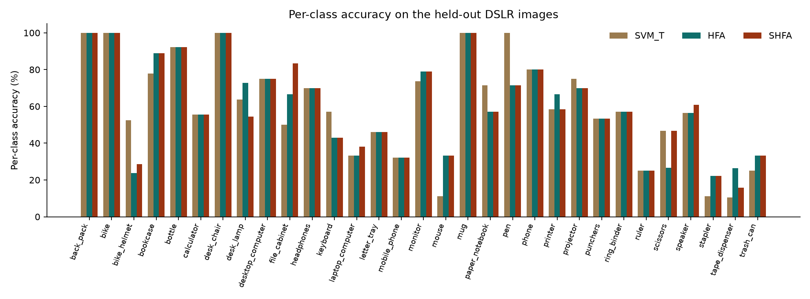
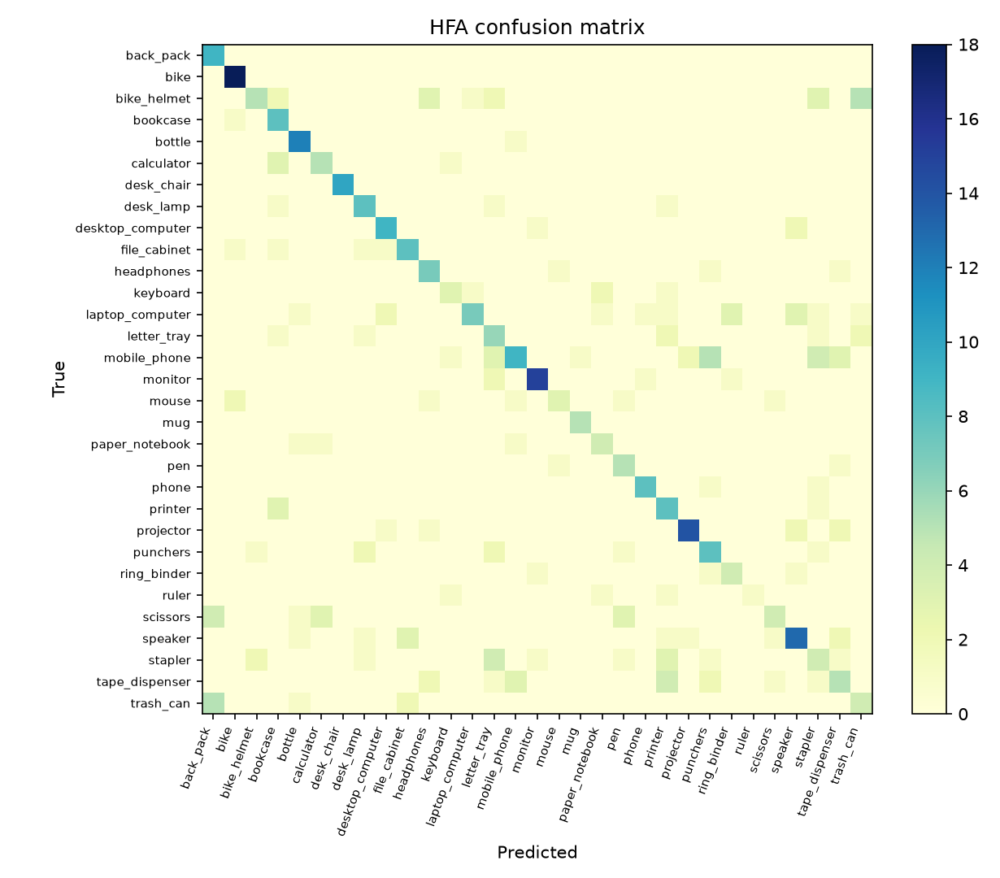

IEEE TPAMI 2014 · 15 minutes
Learning with augmented features for heterogeneous domain adaptation
Wen Li, Lixin Duan, Dong Xu, Ivor W. Tsang. Heterogeneous Feature Augmentation (HFA) and its semi-supervised extension (SHFA).
This talk follows the convex multiple-kernel formulation in the paper, then checks it on the authors' released Amazon → DSLR split.
Open by naming the claim: when source and target features have different dimensions, augment each domain with a learned common block plus its own original features, and learn that map jointly with an SVM. Say that the next 15 minutes are the algorithm, then one official numerical check. Do not spend time on the old alternating solver.
The problem · about 1 minute
The two domains do not share coordinates
Ordinary domain adaptation assumes the same features in both domains. Heterogeneous domain adaptation does not. A weight learned on the source cannot be applied to the target, and padding the shorter vector with zeros does not invent a correspondence.
The Office experiment makes the mismatch concrete. Amazon images are 800-dimensional SURF histograms. DSLR images are 600-dimensional histograms from a different codebook. There are 31 shared categories, 20 labeled Amazon images per category, and only 3 labeled DSLR images per category.
This split
| Samples | Dim |
|---|
| Amazon source | 620 | 800 |
| DSLR labeled | 93 | 600 |
| DSLR test | 405 | 600 |
SHFA also treats those 405 test images as unlabeled target training data. The evaluation is transductive.
Emphasize scarcity: three labels per class is why a target-only SVM is weak, and why the source is worth using even though its coordinates differ. Mention that the public release is this one split, not the paper's 20-split average.
The representation · about 1.5 minutes
Augment a common block with the original features
Daumé's feature replication copies a vector beside itself. That only helps when both copies use the same coordinates. HFA first projects each domain into a common subspace, then builds
φs(xs) = [P xs ; xs ; 0]
φt(xt) = [Q xt ; 0 ; xt]
Cross-domain similarity can flow only through Px and Qx. Same-domain similarity can still use the original block. P and Q are not a preprocessing step. They are learned with the classifier.
source, 800-d
P xs, common
xs, original
zeros, length 600
target, 600-d
Q xt, common
zeros, length 800
xt, original
Same domain matches on the white block. Different domains match only on the teal block.
Walk the picture top to bottom. The zeros are alignment, not features. The point of the later algebra is that P and Q never need to be stored: only the Gram matrix they induce.
From a hard joint problem to MKL · about 1.5 minutes
P and Q collapse into one latent metric
HFA puts the standard SVM hinge on the augmented vectors and constrains the size of P and Q. In the dual, those matrices appear only as PTP, PTQ, and QTQ. Pack them into one positive semidefinite matrix
H = [P ; Q] [PT QT], tr(H) ≤ λ, kernel XT(H + I)X.
1. Drop dc
The common dimension never has to be chosen. The subspace stays latent.
2. Kernelize
Replace X by K1/2. H becomes (ns+nt) square and no longer grows with 800 or 600.
3. Rank-one MKL
Write H as a conic combination of hhT. Rescaling produces an infinite-kernel learning problem, which is convex.
The ICML 2012 precursor alternated an SVM with a semidefinite program in H. That alternation has no global-convergence guarantee. The TPAMI algorithm replaces it with this MKL form. The file hfa_numpy.py in the workspace implements the alternation, on synthetic data. It is not the published solver.
This is the slide to slow down on. Say "convex" only after the rank-one expansion. If asked why MKL: each rank-one atom builds one base kernel K^{1/2}(λhh^T+I)K^{1/2}, and the combination weights are the MKL variables.
Algorithm 1 · about 1 minute
Cutting plane: add the most violated atom
- Start from the flat atom h ∝ 1, scaled by √λ.
- Solve p-norm MKL on the atoms so far. The demo uses p = 1, which is a weighted sum of base kernels inside a C-SVM.
- The most violated rank-one matrix has a closed form: h ∝ K1/2(α ∘ y), then renormalize.
- Append it and repeat until the MKL objective moves by less than 0.1%, or until 50 rounds.
Each of the 31 categories is a separate one-versus-all model. A test DSLR vector is scored with the target block of the kernel only, then the largest score wins.
Demo parameters
Gaussian kernel. Bandwidth from the mean squared distance, zeros on the diagonal included.
C = 1 on every labeled point. λ = 100. Inner MKL loop: at most 100 SVMs, same 0.1% test.
Cost quoted in the paper: O(n³ + T L n2.3), with n = 713 on this split.
Do not derive the KKT conditions. Say the closed form out loud once: the next direction is the kernel square root times the signed dual variables. Mention that several categories hit the 50-iteration cap and others stop early; both are what the release allows.
Using unlabeled DSLR images · about 1.5 minutes
SHFA infers labels while it learns H
The remaining 405 DSLR images are added to the target kernel. Their labels are discrete variables. The loss changes from the hinge to a squared hinge inside ρ-SVM, and a balance constraint keeps the unlabeled positive rate at a prescribed value.
min over yu and H of maxα −½ αT(QH,y + D) α, with 1Tα = 1, α ≥ 0.
Balance
The release sets the positive fraction to the true test-set rate for that category. The paper uses this same prior for SHFA and for T-SVM. Individual test labels are not training labels.
Relaxation
Searching labelings is a mixed-integer program. The convex lower bound mixes many feasible labelings and many rank-one matrices into one coefficient vector d.
p = 1.5
The demo solves the p-norm extension, not plain 1-norm MKL. Unlabeled points are down-weighted: Cu = 10−3, so their square-hinge penalty stays small.
Be explicit about the prior. It is the one place a listener can fairly object. The authors disclose it and give the same number to the transductive-SVM baseline. It is not label leakage of the individual y's, but it is more than an unlabeled sample.
Algorithm 2 · about 1 minute
Each round adds one labeling and one atom
- Initialize the unlabeled labels with a ρ-SVM trained on the 3 labeled DSLR images of that category, then clip the signs so the positive rate matches the prior.
- Build an empirical feature map of (λ+1)K + 11T by a matrix square root.
- The search over labelings is still combinatorial. The paper swaps the Euclidean norm for an ∞-norm, so every feature coordinate yields two candidates: sort unlabeled points by αizij and by its negation, then enforce the rate.
- Keep the candidate with the largest score, append its h ∝ K1/2(α ∘ y), and re-solve p-MKL.
- At test time the demo divides each binary score by that problem's ρ. Because ρ differs across categories, the division affects the argmax. The reproduction follows the demo.
If time is short, skip the infinity-norm sentence and say only: each iteration proposes a new feasible labeling by sorting, then adds the matching rank-one kernel. The division by rho is a demo detail worth one sentence because it changes multiclass ties.
The check we can actually run · about 1 minute
The release is one round, not Table 4
The authors' repository prints two numbers for this fixed split: HFA 0.567901 and SHFA 0.572842. Full MATLAB is not installed on this machine, only the MATLAB runtime, which cannot execute demo.m. The solver below is a direct port of demo.m, demo_shfa.m, train_hfa_mkl.m, train_shfa_pnorm.m, and sumkernels.cpp, using the same LIBSVM problem each file calls.
An RTX 5070 Ti is present. It is not used. Nothing in the official method is a GPU program, and a GPU rewrite would no longer be that method.
Also reported here
SVM trained on the 93 labeled DSLR images only, with the same Gaussian kernel and C = 1. That is the paper's SVMT baseline on this split. HeMap, DAMA, ARC-t, the Webcam source, and the two text datasets are not in the release.
Say clearly that 0.567901 is 230 correct out of 405, from the authors' README, and that our number is either that or a stated difference. Do not compare against the paper's 20-split mean unless you have the table in front of you; the PDF tables did not extract as text.
Result · about 1 minute
One-versus-all accuracy on 405 DSLR images
SVM on DSLR labels56.54%229 / 405
HFA56.54%229 / 405 · author 230 / 405
SHFA, p = 1.557.28%232 / 405 · author check
HFA ties the target-only SVM on this split, one image below the authors' HFA printout. SHFA is three images higher, which is the count behind their printed SHFA check.

Read 229, 229, 232 out of 405. HFA is one image short of the authors' 230. Say that the decision function matches the SVM to numerical noise, and the remaining image is the difference between LIBSVM 3.20 and the LIBSVM inside scikit-learn, because MATLAB itself is not installed. SHFA lands on 232, the only count consistent with their printed 0.572842.
Where the accuracy comes from · about 1 minute
Per-class accuracy is uneven, and class sizes differ

Point at a tall class and a short class. Overall accuracy weights categories by how many DSLR test images they have: mobile phone has 28, ruler has 4. A single overall percentage hides that. The support chart is the next slide if someone asks; otherwise mention the range verbally from the results note.
Errors · about 50 seconds
HFA confusion on the 31 Office categories

Do not read the matrix cell by cell. Say that mass on the diagonal is the correct predictions, and that confusions tend to sit between visually related office objects rather than being uniform. Offer the SHFA matrix in the results note if asked whether unlabeled data changes the error pattern.
How not to over-read the figure · about 1 minute
Three limits on this number
One split
The paper averages 20 random draws and also reports Webcam → DSLR. The release contains neither the other draws nor Webcam. A one-point move is not a significance test.
Transductive prior
SHFA sees the test images as unlabeled data, and it is given each category's true positive rate. SVMT and HFA do not. The comparison is still the paper's comparison, but it is not an inductive test.
Not Table 4
Reuters and the sentiment corpus are absent from the code release. The Office mean ± standard deviation in the paper is a different statistic from the one-round printout.
What the check does support: with the authors' data, kernel, λ, C, and stopping rule, the convex cutting-plane method runs and lands on the accuracy their demo is written to produce.
This is the honesty slide. If the measured HFA accuracy differs from 0.567901, say by how many images and do not call it a reproduction of the printed digit. LIBSVM versions can move a boundary point.
Close · through 15:00
What to keep
- Heterogeneous adaptation here means learning a common block, not pretending the original coordinates match.
- Keeping the original features beside that block is the augmentation. H stores the common block only, and cutting-plane MKL learns it jointly with the SVM.
- SHFA extends the same atoms with inferred unlabeled labels, a class-prior constraint, and a p-norm of 1.5. On this official split the movement relative to HFA is the quantity the demo was published to show.
Code and figures: python_implementation/, matlab_implementation/, HFA_SHFA_ALGORITHM.md.
Stop. Take questions on the prior, on why MKL rather than a deep net, and on why the GPU was idle. A deep net would be a different method and could not be checked against 0.567901.